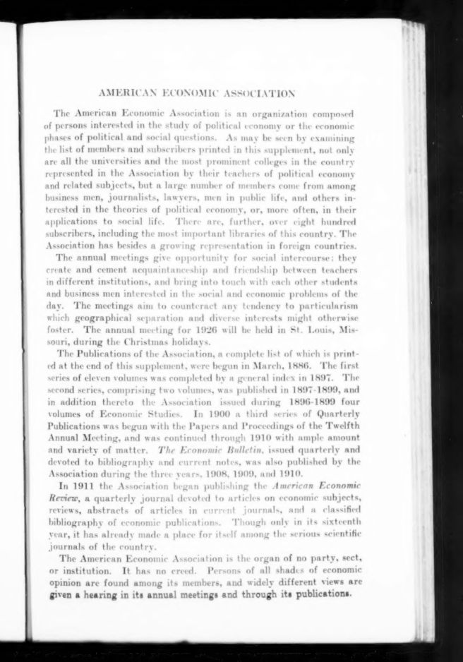

Manual de 1926: a carta de 1923, Evanston e Mises e Hayek em Viena
Leitura: 5 min
O manual de 1926 troca o estatuto por uma carta de incorporação, muda a secretaria para Evanston, cria novas classes de sócios, passa de oitocentos assinantes e registra Mises e Hayek em Viena.


O manual de 1926 já não traz um estatuto. No lugar da “Constitution” das edições anteriores, o sumário anuncia “Charter and By-Laws”: a American Economic Association fora incorporada no Distrito de Colúmbia em 3 de fevereiro de 1923 e passara a ter carta de incorporação, conselho de curadores e um advogado entre os dirigentes. A capa também mudou de endereço: os escritórios de publicação ficam em St. Albans, Vermont, e em Evanston, Illinois, e as assinaturas passam a ser tratadas na Northwestern University. O exemplar avulso, em brochura, segue custando US$ 1,50.
O Handbook of the American Economic Association saiu como suplemento do nº 2 do vol. XVI da American Economic Review, em junho de 1926. A página de abertura lembra a fundação em Saratoga, em 9 de setembro de 1885, e lista os ex-presidentes, agora até Allyn A. Young, de Harvard. Entre os dirigentes do ano estão Edwin W. Kemmerer, de Princeton, na presidência; Benjamin Strong, de Nova York, e Ira B. Cross, da University of California, nas vice-presidências; Frederick S. Deibler, da Northwestern, como secretário e tesoureiro; Edward A. Harriman, de Washington, como advogado; e Davis R. Dewey como editor-gerente da Review. O sumário mantém as quatro partes do manual de 1922, comentado no nº 177.
O que mudou desde 1922?
A apresentação repete, quase palavra por palavra, o texto de 1922. Os assinantes, que eram quase seiscentos, passam a ser mais de oitocentos, entre eles as bibliotecas mais importantes do país. A reunião anual de 1926 está marcada para St. Louis, no Missouri, nas festas de fim de ano. A Review chega ao décimo sexto ano. E a frase de princípio se mantém:
“A American Economic Association não é órgão de nenhum partido, seita ou instituição.” (“The American Economic Association is the organ of no party, sect, or institution.”)
O que diz a carta de incorporação?
American Economic Association · “Charter and By-Laws of the American Economic Association” · pp. 3–4
A carta registra o nome, a duração perpétua e três objetivos: o estímulo à pesquisa econômica, em especial ao estudo histórico das condições reais da vida industrial; a publicação de trabalhos sobre temas econômicos; e o estímulo à perfeita liberdade de discussão econômica. A associação, diz o texto, não adotará atitude partidária nem comprometerá seus membros com posições sobre questões econômicas práticas. O primeiro conselho de curadores teria catorze membros.
Os regulamentos que seguem reorganizam a filiação em quatro classes, além dos sócios honorários estrangeiros, limitados a 25: sócios comuns, sócios assinantes, sócios contribuintes e sócios vitalícios. Os curadores, entre catorze e quinze, formam o Comitê Executivo. Entre os dirigentes aparece o advogado, membro da ordem do Distrito de Colúmbia, em cujo escritório fica a sede legal da associação. A reunião anual passa a ter data e local definidos pelo Comitê Executivo, com aviso na Review ao menos dez dias antes; a primeira, pela carta, seria em Providence, Rhode Island, em dezembro de 1923. Emendas exigem aprovação do Comitê Executivo e voto da maioria dos presentes numa reunião regular.
Quem aparece no índice geográfico?
A lista de sócios e assinantes ocupa as páginas 5 a 74, e o índice geográfico, as páginas 75 a 118; em 1922, eram 57 e 39 páginas.
Fora dos Estados Unidos e do Canadá, o índice vai da Austrália à Turquia. A seção da Áustria, que em 1922 tinha apenas F. von Wieser, reúne agora quatro nomes em Viena: L. Fritscher, F. A. Hayek, L. Mises e Wieser. Em Cambridge aparecem J. N. Keynes e A. C. Pigou; em Paris, C. Gide e G. Jèze; em Turim, L. Einaudi e A. Loria; em Roma, M. Pantaleoni; em Munique, L. Brentano; em Dublin, C. F. Bastable.
No Canadá, Kingston traz H. Heaton, autor de um artigo no número regular de junho, e Toronto, entre outros, C. R. Fay e H. A. Innis. Na América do Sul há entradas no Rio de Janeiro, em Santiago, Medellín, Assunção e Lima. O Japão segue com uma das seções mais longas fora da América do Norte, com Tóquio, Osaka, Kobe e Kyoto, e a China tem entradas de Amoy a Tianjin. Depois do índice, uma lista de publicações da associação registra, entre os suplementos, os manuais de 1922 e de 1924.
Na minha leitura
Na minha leitura, a mudança jurídica é o dado central deste manual. Ao trocar um estatuto de clube por uma carta de incorporação, a associação ganha personalidade legal, sede, conselho de curadores e advogado, e transforma os objetivos em cláusulas: pesquisa, publicação e liberdade de discussão, sem posição oficial sobre questões práticas. A mesma neutralidade da apresentação passa a ter forma de lei.
As classes de sócios contam outra parte da história. Ao lado da anuidade comum, a associação cria categorias de quem paga mais por escolha e dobra o preço da filiação vitalícia, um sinal de que suas publicações e reuniões já exigiam uma base financeira mais ampla.
Glossário
- Carta de incorporação (charter)
- ato que dá personalidade jurídica a uma associação e fixa seu nome, duração e objetivos.
- Curadores (trustees)
- membros do conselho que responde legalmente pela associação; aqui, o próprio Comitê Executivo.
- Sócio vitalício (life member)
- quem paga uma contribuição única e fica isento das anuidades.
- Assinante (subscriber)
- instituição ou pessoa que recebe as publicações sem ser sócia, como as bibliotecas.
- Índice geográfico
- relação dos sócios e assinantes organizada por lugar, e não por ordem alfabética.
Artigos (1)
- Charter and By-Laws of the American Economic Association — carta de incorporação de 3 de fevereiro de 1923 e regulamentos (pp. 3–4) · resenha acima
Documentos, periódicos e notas (3)
- Purposes of the American Economic Association — texto institucional (pp. 1–2). Repete a apresentação de 1922, agora com mais de oitocentos assinantes, a reunião de 1926 marcada para St. Louis e a Review no seu décimo sexto ano.
- List of Members and Subscribers (pp. 5–74). Relação alfabética de sócios e assinantes, com endereços, sinais para as classes de filiação e o ano de início da filiação contínua.
- Geographical Index of Members and Subscribers (pp. 75–118). Os mesmos nomes agrupados por estado e cidade nos Estados Unidos e no Canadá e, depois, por país, da Austrália à Turquia.
Fontes
- Purposes of the American Economic Association (pp. 1–2). Internet Archive (número completo, PDF)
- Charter and By-Laws of the American Economic Association (pp. 3–4). Internet Archive (número completo, PDF)
- List of Members and Subscribers (pp. 5–74). Internet Archive (número completo, PDF)
- Geographical Index of Members and Subscribers (pp. 75–118). Internet Archive (número completo, PDF)
- Número completo digitalizado (domínio público): Internet Archive.
Documento em domínio público (EUA, publicado antes de 1931), via JSTOR Early Journal Content e Internet Archive. Resumo e comentário do autor deste site, sem afiliação com a American Economic Association. Encontrou um erro? Escreva: a correção é publicada no próprio texto, com data.
← Nº 197 · Juros no ciclo, tarifas pelo custo, Austrália e o List americano Nº 199 · Blakey e os impostos de 1926, Graham e as máquinas →